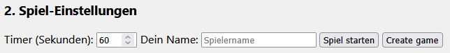
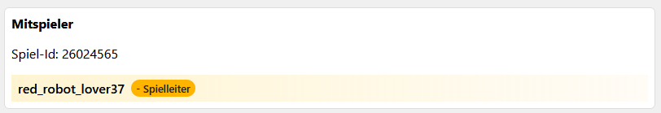
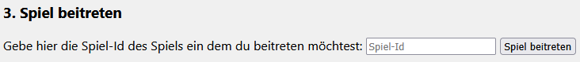
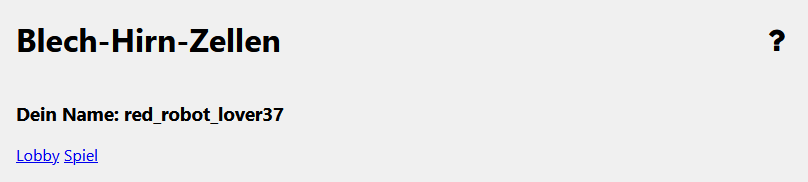
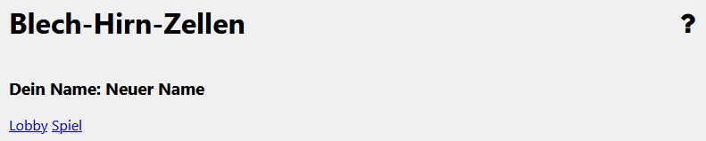
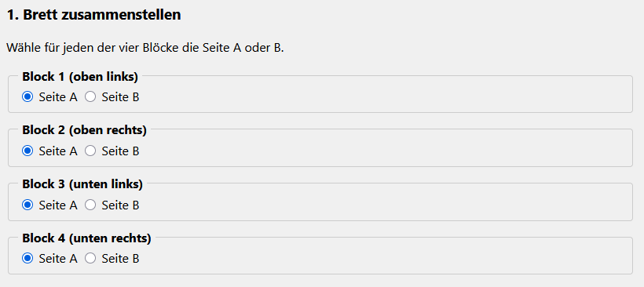

Das Spielbrett besteht aus 16 * 16 Feldern, wobei das Spielbrett in 4 gleich große 8 * 8 Felder große Quadraten aufgeteilt ist. Manche Felder besitzen Mauern. Die Felder am Spielbrettrand besitzen alle Mauern an ihren äußernen Rändern. Auf dem Spielbrett sind 4 verschieden farbige Roboter verteilt. Zusätzlich sind 16 verschieden farbige und eine weiters besonderes Zielfelder über das Spielbrett verteilt. Zu den Zielfeldern gehört jeweils ein Zielchip.

Das Ziel des Spiel ist es die meisten Zielchips zu gewinnen. Spieler gewinnen Zielchips in dem sie den Roboter mit der selben Farbe wie dem Zielchip mit möglichst wenigen Zügen auf das zu dem Zielchip gehörende Zielfeld bewegen. Um eine möglichst niedrige Zugzahl zu finden dürfen Spieler die Roboter über das Spielfeld bewegen.
Die Roboter könnnen sowohl per Maus und Tastatur oder Touch bewegt werden jenach Eingabegerät verhält sich die Steuerung dabei unterschiedlich. Steuerung per Maus und Tastatur: Ein Roboter kann per Rechtsklick ausgewählt werden. Ein ausgewählter Roboter besitzt eine Umrandung und ist größer als die restlichen Roboter. Ein Roboter kann mittels der Pfeiltasten horizontal oder vertikal bewegt werden. Die Pfeiltasten nach oben und unten bewegen den Roboter jeweils in die ensprechende vertikale Richtung. Die Pfeiltasten nach links und rechts bewegen den Roboter jeweils in die ensprechende horizontale Richtung.
Steuerung per Touch: Ein Roboter kann durch Antippen ausgewählt werden. Ein ausgewählter Roboter besitzt eine Umrandung und ist größer als die restlichen Roboter. Die Bewegungsrichtung eines Roboter kann durch Antippen der, von dem Roboter, horizontal oder vertikal ausgehenden Felder ausgewählt werden. Die Felder der gewählten Richtung werden farblich hervorgehoben. Soll ein Roboter in die Richtung bewegt müssen die Felder gegewählten Bewegungsrichtung erneut angetippt werden.
Das Spiel wird durch betätigen des Spielstartenknopf gestartet.

Bei Beginn einer Runde wird eine zufälliger farbiger Zielchip ausgewählt. Spieler müssen den gleich farbigen Roboter auf das Zielfeld des ausgewählten Zielchips bewegen.
Dazu dürfen sie zur Hilfe die anderen Roboter bewegen. Roboter können, zusätzlich zu den Wänden, als Hindernis dienen, das andere Roboter stoppt. Dadurch können neu Wege auf dem Spielbrett eröffnet werden.
Die Roboter können allerdings nur horizontal oder vertikal bewegt werden und bewegen sich solange in die gewählt Richtung bis sie auf ein Hindernis, wie eine Wand oder einen anderen Roboter treffen. Jede horizontale oder vertikale Bewegung eines Roboters gilt als ein Zug. Das betrifft sowohl den Roboter, der auf das Zielfeld bewegt werden muss als auch die anderen Roboter, die als Hindernisse dienen.
Hat ein Spieler einen Weg gefunden kann er seine Zugzahl über ein Gebot einloggen. Nachdem ein erstes Gebot durch einen Spieler abgegeben wurde beginnt eine Sanduhr. Während die Sanduhr abläuft dürfen alle Spieler weitere Gebote abgeben, allerdings mit der Einschränkung, dass sie die Roboter nicht mehr über das Spielfeld bewegen dürfen sondern eine Lösung in ihrem Kopf finden müssen.
Der Spieler, der bereits ein Gebot abgegeben hat darf sein eigenes Gebot nur überbieten in dem er eine geringere Anzahl an Zügen bietet. Die restlichen Spieler dürfen zusätzlich zu geboten mit einer niedrigeren Anzahl an Zügen auch gleich viel oder mehr Züge bieten. Grund dafür ist, dass der Spieler mit dem besten Gebot seine Lösung nachdem der Timer abgelaufen ist auf dem Spielfeld mit den Robotern zeigen muss.
Bricht die Lösung dabei die Spielregel oder enstricht ihre Zugzahl nicht der geboteten Zugzahl erhält der Spieler den Zielchip nicht. Dieser Vorgang wird solange wiederholt wie gebote existieren oder bis eine korrekte Lösung gefunden und der Zielchip an einen Spieler vergeben wurde. Falls mehrere Spieler die selbe Zugzahl geboten haben dürfen sie ihre Lösung in der Reihenfolge ihrer Gebote vorführen.
Danach beginnt die nächste Runde falls noch Zielchips übrig sind sonst wird das Spiel beendet und der Spieler mit der meisten Menge an Zielchips gewinnt. Bei Beginn einer neuen Runde wird die Startposition der bewegen Roboter auf die Position verschoben auf der sie am Ende der letzten Runde standen. Besitzten mehrer Spieler die selbe Anzahl an Spielchips kann es auch mehrer Sieger geben.
Nachdem Spielende können Spieler entscheiden das Spiel zu verlassen oder erneut zu spielen.
Ein Roboter muss auf seinem Weg zum Ziel mindestens einmal abbiegen. Er darf also nicht direkt auf ein Zielfeld bewegt werden.
Ein Mehrspieler Sitzung kann über den Knopf "Spiel erstellen" erzeugt werden. Nachdem erstellen eines Spiels wird eine Spiel-Id angezeigt und der Spieler, der das Spiel erstellt hat wird zum Spielleiter. Der Spielleiter darf als einziger Spieler die Einstellungen des Spiels anpassen. Die Spiel-Id muss einen anderen Spieler übergeben werden sodass dieser dem Spiel beiterten kann.

Um einem Spiel beizutreten muss die Spiel-Id des Spiels in das Eingabefeld eingetragen und der Button gedrückt werden. Nachdem beitreten werden die Spieleinstellungen und die Namen der restlichen Spieler angezeigt

Spiel erstellen, Spiel beiterten, Name ändern, Bewegung der Roboter, Gebot abgabe, Wie wird ein Sieger gewählt
Über das Spielernamesfeld können Spieler ihren generierten Name der am oberen Bildschirmrand und anderen Spielern angezeigt wird ändern.


Das Spielbrett kann über die Auswahl der Quadraten an konfiguriert werden. Dadurch ist die Wahl von Unterschiedlichen Spielbrett varianten möglich.
